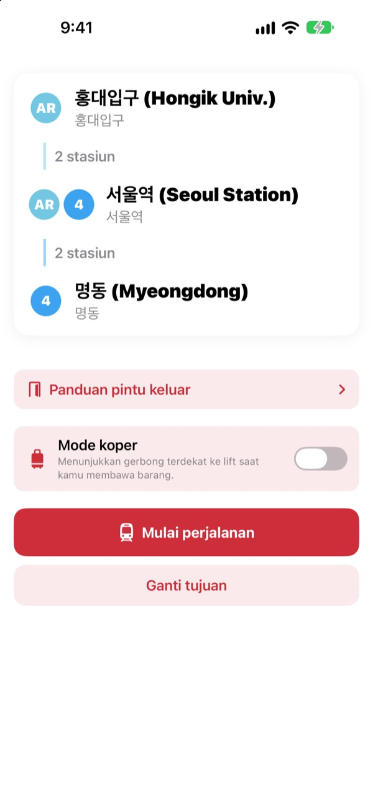
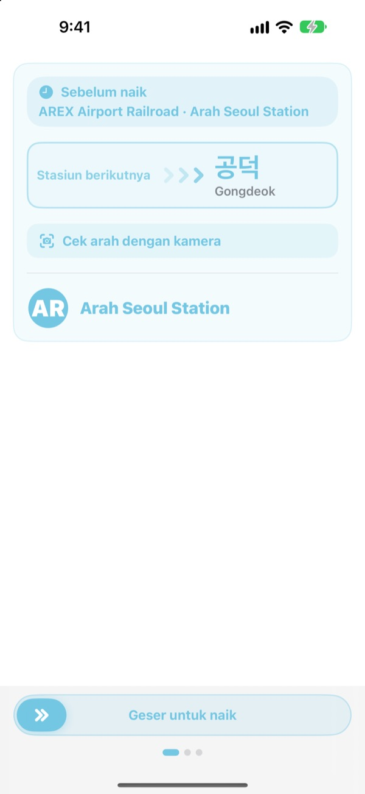
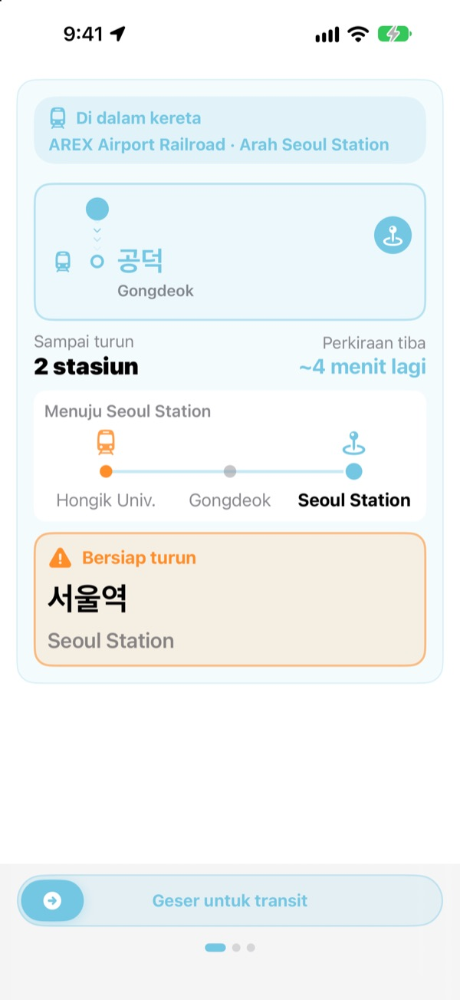
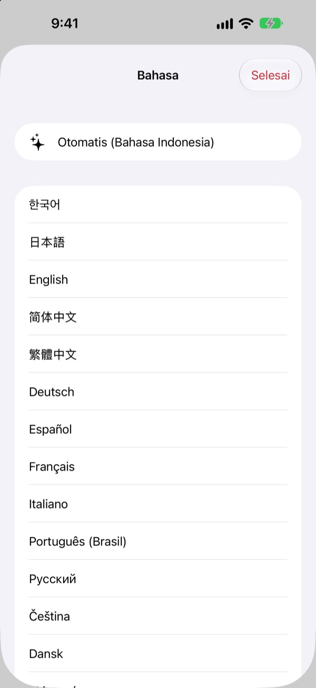

Peron yang tepat.
Stasiun yang tepat.
Pilih stasiun awal dan tujuan, dan KORA memberi tahu kereta mana yang harus dinaiki, persis seperti tulisan di papan peron. Selama perjalanan, KORA mengikuti stasiunmu dan memberi tahu kapan harus turun.
Pencarian rute, arah kereta, dan info kedatangan real-time gratis.

Coba naik sekali
Kamu ada di Hongik Univ. di jalur AREX. Pilih tempat turun lalu ketuk Mulai perjalanan untuk melihat arah kereta dan pengingat turun, sama seperti di aplikasi.
Pernah bingung di peron, kereta mana yang harus dinaiki?
Aplikasi peta hanya menunjukkan jalurnya, sedangkan di peron cuma ada papan berisi nama stasiun yang belum pernah kamu dengar. Salah arah, kamu harus balik beberapa stasiun. Terlewat pengumuman, kamu kebablasan. KORA menyebut keretamu sama seperti papannya dan mengingatkanmu sebelum stasiun tujuan.
Sama persis dengan papannya
Kereta yang harus dinaiki ditampilkan persis seperti tulisan tujuannya di peron dan di kereta. Masih ragu? Arahkan kamera ke papan di peron atau papan tujuan kereta, dan KORA langsung memberi tahu apakah arahnya benar.
Pengenalan teks berlangsung sepenuhnya di iPhone-mu.

Tidak kebablasan lagi
KORA menggabungkan info kedatangan real-time, GPS, saat kereta berangkat dan berhenti, serta pengumuman di dalam kereta untuk tahu posisimu. Saat stasiun tujuan dekat, muncul “Bersiap turun”, lalu “Turun sekarang!”, disertai getaran.
Progres perjalanan juga tampil di Layar Kunci dan Dynamic Island.

23 bahasa, nama Korea tetap ada
Pakai seluruh aplikasi dalam 23 bahasa; awalnya mengikuti bahasa iPhone-mu. Nama stasiun ditampilkan dalam bahasa Korea di samping ejaan Latin dari papan stasiun, jadi mudah dicocokkan di peron.

Mulai dalam tiga langkah
- 1
Tentukan stasiun awal
GPS mencari stasiun terdekat, atau pilih sendiri.
- 2
Pilih tujuan
Transit, jumlah stasiun, dan kereta yang tepat langsung muncul.
- 3
Ketuk Mulai perjalanan
Layar dan getaran memberi tahu kapan harus turun.
Kegunaan tiap izin
- Lokasi
- Mencari stasiun terdekat
- Kamera
- Membaca papan peron dan papan tujuan untuk mengecek arah
- Mikrofon dan pengenalan suara
- Menangkap nama stasiun dan sisi pintu dari pengumuman di kereta
- Gerakan & Kebugaran
- Mendeteksi kereta berangkat dan berhenti agar stasiun saat ini lebih akurat
Semua izin bersifat opsional. Tanpa izin, kamu tetap bisa memilih stasiun sendiri dan mendapat rute serta pengingat turun. Lokasi, kamera, dan pengumuman diproses di perangkatmu dan tidak pernah direkam, disimpan, atau dikirim.
Mencari rute selalu gratis. Pemandu selama perjalanan ada di KORA Pro.
Gratis
- Pencarian rute dan transit
- Papan tujuan kereta yang harus dinaiki
- Info kedatangan real-time
- Cek arah dengan kamera
- Stasiun saat ini dan pengingat turun di layar
- Semua fitur Pro di tiga perjalanan pertama
KORA Pro
- Di setiap perjalanan: panduan di Layar Kunci, pengenalan pengumuman, dan getaran saat turun
- Panduan pintu keluar: tempat di sekitar tiap pintu keluar jalur 1–8 Seoul
- Pengingat kereta terakhir di jalur 1–9
- Mode koper: gerbong terdekat dengan lift di jalur 1–8
Bayar sekali, pakai selamanya. Bukan langganan.
Setelah perjalanan gratis habis, kamu tetap bisa naik. Progres di layar tetap ada; hanya Layar Kunci, pengenalan pengumuman, dan getaran yang berhenti sementara.
Pertanyaan umum
Aplikasi tidak menemukan stasiunku atau menampilkan stasiun yang salah.
Buka Pengaturan > Privasi & Keamanan > Layanan Lokasi > KORA, pilih “Saat Menggunakan App”, lalu nyalakan “Lokasi Akurat”. Di bawah tanah atau di gedung besar GPS bisa meleset: ketuk kartu stasiun saat ini di atas dan pilih sendiri. Semua fitur tetap jalan tanpa akses lokasi.
Bagaimana cara memakai cek arah dengan kamera?
Setelah rute muncul, buka cek arah dengan kamera dan penuhi bingkai dengan papan di peron atau papan tujuan kereta. Hasil terbaik didapat dari tulisan Korea. Kalau papannya gelap, jauh, atau terlalu miring, dekati dan arahkan lurus. Hasilnya hanya bantuan, jadi kalau ragu, cek juga papan petunjuk di stasiun.
Info kedatangan real-time tidak muncul.
Datanya berasal dari Seoul Open Data Plaza, butuh internet, dan tersedia terutama untuk jalur di wilayah metropolitan Seoul. Tanpa koneksi atau data real-time, KORA otomatis beralih ke perkiraan berdasarkan jadwal, GPS, dan akselerometer, lalu tetap memandumu. Pencarian rute bisa tanpa internet.
Pengingat turun datang sedikit terlalu cepat atau lambat.
Di bawah tanah sinyal GPS lemah, jadi stasiun saat ini bisa tertinggal. Kalau kamu mengizinkan mikrofon, KORA mengoreksi posisi lewat pengumuman di kereta. Pengingat hanya bantuan, jadi dengarkan juga pengumuman dan perhatikan papan stasiun.
Bagaimana cara mengganti bahasa?
KORA mulai dalam bahasa iPhone-mu. Tekan lama kartu stasiun di layar utama (stasiun saat ini atau tujuan) untuk membuka pilihan 23 bahasa.
Aktivitas Langsung tidak muncul di Layar Kunci.
Periksa di Pengaturan > App > KORA (di iOS lama, Pengaturan > KORA) bahwa Aktivitas Langsung menyala. Aktivitas ini muncul saat kamu memulai panduan perjalanan dan berakhir jika aplikasi ditutup sepenuhnya. Dynamic Island hanya ada di model iPhone yang memilikinya.
Kota mana saja yang didukung?
Sekitar 930 stasiun di wilayah metropolitan Seoul (Seoul, Gyeonggi, dan Incheon, termasuk GTX-A, AREX, jalur Shinbundang, dan kereta ringan), Busan, Daegu, Gwangju, dan Daejeon. Ganti kota lewat tombol wilayah di bagian atas pemilihan stasiun.
Bisakah dicoba sebelum berangkat?
Bisa. Pilih sendiri stasiun awal dan tujuan, lalu lihat rute, transit, dan arah kereta dari mana saja di dunia.
Apakah KORA Pro langganan?
Bukan. Ini pembelian sekali yang tetap jadi milikmu dan bisa dipakai dengan Berbagi Keluarga. Kalau kamu memasang ulang aplikasi, ketuk Pulihkan Pembelian di layar Pro.
Bagaimana dengan dataku?
Tanpa akun dan tanpa iklan. Lokasi, kamera, dan pengenalan pengumuman diproses di perangkatmu dan tidak pernah disimpan atau dikirim. Kami hanya mengumpulkan statistik penggunaan anonim untuk menyempurnakan aplikasi.
Apakah aplikasinya mendukung aksesibilitas?
KORA mendukung VoiceOver dan ukuran teks yang lebih besar. Saran untuk aksesibilitas yang lebih baik selalu kami sambut.
Ada stasiun yang hilang, nama yang aneh, atau pertanyaan lain? Kirim ke mizzking75@gmail.com. Sertakan versi aplikasi, model iPhone, dan stasiun yang kamu pakai agar kami bisa memeriksanya lebih cepat.